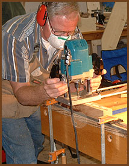
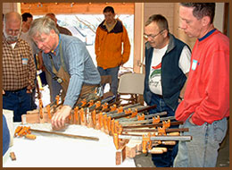
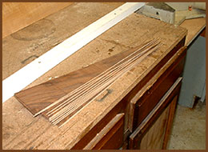

|
I was one of those fortunate high school students to have a gifted shop teacher who taught a geometric approach to woodworking, rather than simply machine operations. As a firefighter in San Jose, CA, my 24-hour shifts left plenty of time for my growing love of woodworking, and over those 25 years, I built and sold many pieces. Now in retirement, I can pursue the craft full-time.

Initially, I found that I was allowing my joinery to dictate my designs, producing boxy and amateur-looking pieces. Also being a frugal woodworker, I was letting the material dictate the proportions, simply because I didn't want to "waste" wood. I finally came to the conclusion that what I really lacked was some design education.
In my quest for "design knowledge," I undertook a year apprenticeship through the Baulines Guild with master craftsman Roger Heitzman in Scotts Valley, CA. Although it wasn't cheap, it was the best money that I ever spent. I had always thought that a good designer just had a good eye and instinctually knew what looked good. Instead, I found that good design is a learned discipline. One such lesson was the benefit of veneer. Though I had always thought that solid wood was the mark of quality, Roger pointed out how restrictive solid wood was to design-the wood grain runs either lengthwise or across.
Veneer, on the other hand, opens an unlimited vista of design options without the problems of wood movement-and it certainly has expanded my palette. I particularly love to utilize slip matched, radial patterns, allowing the subtle changes in the grain patterns to create a form of animation as eyes move across the piece (as seen in the Demilune Table).
But don't get me wrong. I still do plenty of solid wood construction for clients (such as the Cocobolo Dining Table). As the world's exotic forests continue to shrink, veneer is becoming a better environmental choice, and some of the veneer houses, like the Alpi Group, have been perfecting a dying process that colors the veneer all the way through the leaf. In some instances, the finished product is better than the real thing, if you could find it.

Not satisfied with most commercial products, I have been re-sawing my own veneers from thick stock to thicknesses that will allow refinishing many times over the piece's long life. Sawing, instead of slicing the veneers, introduces a slight change from one veneer to the next, which results in an unpredictable pattern in a slip matched, radial sunburst that can be especially pleasing to the eye.
Although I enjoy experimenting with my own designs, I find that working with clients, who have their own ideas, can sometimes lead to unimagined design options.
I have tried several times to learn computer design programs, but most of my drawings are still done the old-fashioned way, with pencil and paper. After I finish the preliminary sketch, I usually build a mock-up of junk wood and hot glue. I paint the mock-up a flat white and set it beside my television. During the commercial breaks, I study it and usually am able to determine what is wrong with the form. Back at the shop, I disassemble it with a hot putty knife and make changes. Over a period of time, I will refine the lines and curves, as well as the dimensions of various components.
In 1999, I moved to Etna, a small town in Northern California, and joined the Siskiyou Woodcraft Guild, where I have enjoyed the company of the other woodworkers and attend wood shows in Ashland, OR. In 2004, I entered some pieces in my first big show, Portland's Best of the Northwest. To my amazement, I won the Best of Show and a Peer Award for my Demilune Table and received requests to teach classes for the Guild of Oregon Woodworkers.
I have found teaching both rewarding and difficult. Trying to do complicated machine operations, while interacting with students, is a sure way to divide your concentration. For the Oregon Guild, I have taught workshops on constructing a Demilune Table and dining room chairs, and I am contemplating another class in the Fall.
|

A day at the Demilune class at Len Walco's shop for the Guild of Oregon Woodworkers. This was the first of two days of intensive instruction. Here I am clamping up the apron on a curved form in what is called a bent lamination. After drying, the apron will be cut into three pieces; the center one will be cut into the five pieces to form a drawer with very small margins. A very brittle adhesive is used so there will be no spring back once the lamination is removed from the bending form.
|

Here, the veneers have been resawn from a single block of walnut. At this stage the thickness is a little over 1/8". They must be kept in sequence and the maple string is already attached.
|

The veneers are laid out in a radial or sunburst pattern, in what I call a slip match. This is the first time you get to see the potential of a given set. Some times I am expecting a really spectacular set and it just fails to happen. Other times, wow! It turns out fantastic. A bookmatch pattern can be predicted with the use of a hinged mirror, but the slip match is a wild card every time!
|
I mainly show my work in galleries, such as Gallery M in Half Moon Bay, CA and Ashland Hardwood Gallery in Ashland, OR. I can be reached at (530) 467-3922 or by email at Don@FineCustomWoodFurniture.com for any questions or designs you might wish to examine.
Reprinted with permission of Woodworker West
|